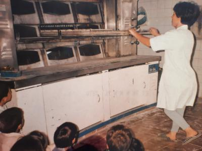

Noutros tempos, em que não se podia faltar pão á mesa, o conceito de ter uma padaria em cada aldeia
era normal, mas não era um negócio para qualquer um, as padarias eram passadas de geração em geração
e é nesse conceito que nasce a Padaria HMF.
Com os conhecimentos passados de pai para filho, em 1938, Henriquel Manuel Ferreira decide criar o seu legado
e em 38 anos esse conceito continua com técnicas e conhecimentos de duas gerações passadas.
A missão é sempre a mesma, levar o pão á mesa de toda a gente, para que possam aproveitar o pão quente no conforto das suas casas.
Apesar da inovação do mercado, esta padaria ainda tenta manter a tradição e o conceito original, com um espaço acolhedor e ainda com um forno a lenha.
Copyright2023